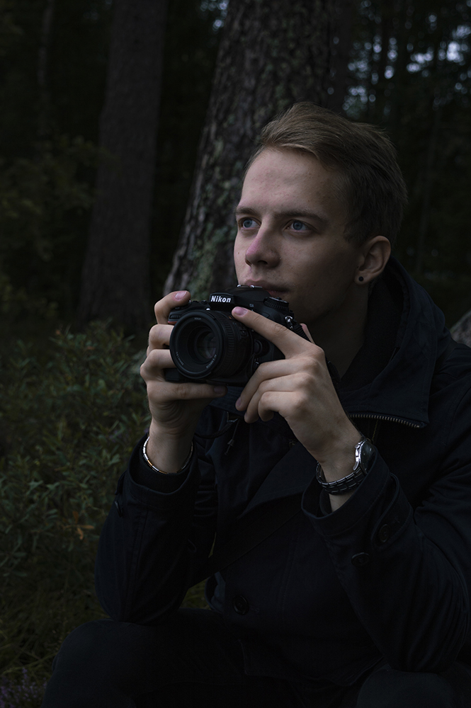

Marius Krenevičius is a photographer and a web designer who is passionate about traveling the world and nature and has been from a young age. When he took his first photo, he knew that the world was too interesting and beautiful to not document it. At 21 years old he has already been to 20 countries around Europe and doesn't plan to stop. Marius got introduced to photography by his father, who is always taking pictures to document the trips and to be able to remember them later. Marius decided to do so as well and that remained the most important reason for photography to him.
